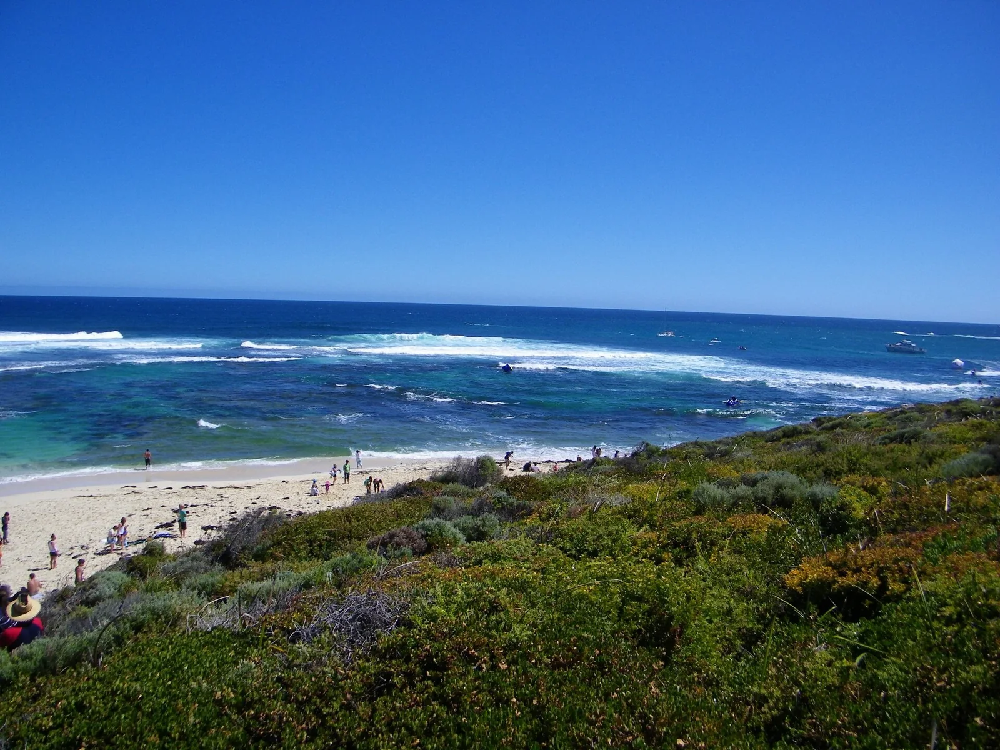

Margaret River — Main Break
Australie · surf

Vague de reef puissante de l'ouest australien, qui marche par grosse houle dans un cadre sauvage.
- Lieu
- Australie
- Niveau
- Expert
- Activités
- surf
- Type d'eau
- Mer / océan
- Coordonnées
- -33.97, 114.99 (position approximative du secteur)
Dangers à connaître
- Grosses vagues.
- Zone à requins.
Le conseil d'Ocean Buddy
Spot costaud pour grosse houle ; reste sur tes gardes et vise tes jours.
Ouvrir dans Ocean Buddy Télécharger sur l'App Store
Source : Description historique Ocean Buddy · vérification externe en attente.